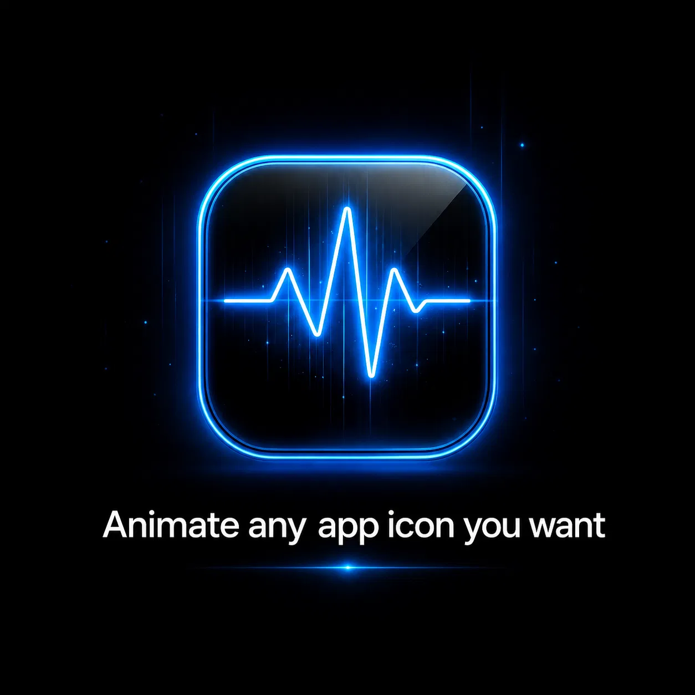

Your Home Screen, alive.
Turn static Home Screen icons into smooth GIF and APNG animations, with per-app controls, themes, previews, performance tuning, and a complete theme workflow built directly into Settings.
Theme Mixer lets you choose a Base Theme and a Fill Theme. Missing animations from the second theme are added to a new combined theme without modifying either original.
Example: keep the look of one pack, then automatically borrow its missing Instagram, Maps, Messages, or other animations from another pack.
Designed for modern jailbroken iPhones using rootless or RootHide-style environments. LivingIcons currently targets iOS 17+.
Package: com.adam.livingicons · Version 1.0.0 · by Adam Never Lack